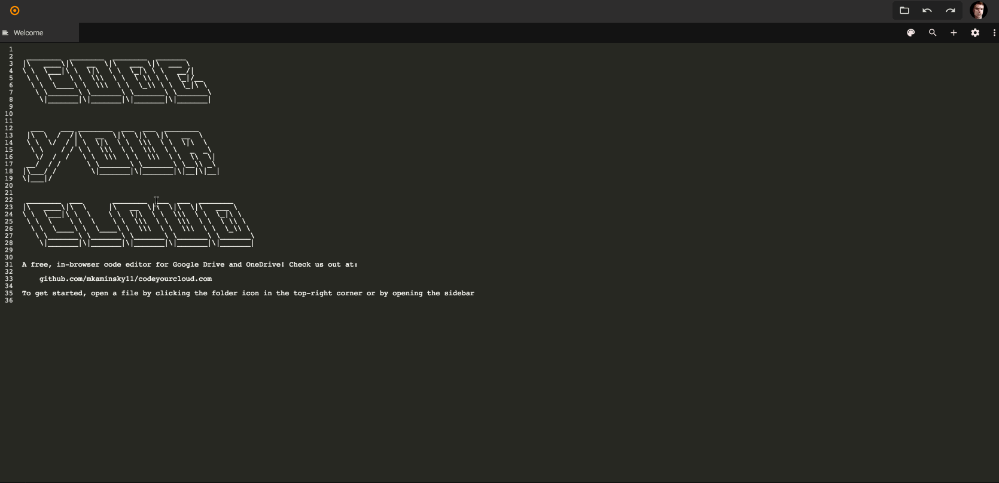

Focusing on atmospheric chemistry to clean up our air
RENEWABLE ENERGY
nature_people
Researching and building clean, alternative energy sources
I am a junior at Columbia University majoring in biomedical engineering and planning on attending medical school. My interests include biomedical research, atmospheric chemistry, and database management. Over the past few years, I completed an air pollution research project under the guidance of an MIT atmospheric chemist, worked alongside cancer researchers at the Beth Israel Deaconness Medical Center, and performed research in the lab of Dr. Andrew Marks at Columbia University Medical Center.
During my college career, I have served on the executive board of the Columbia University Charles Drew Pre-Medical Society, volunteered for over 100 hours at St. Luke's Hospital, and spent hundreds of hours performing research in Dr. Andrew Marks's lab at Columbia University Medical Center.
Skills
Wet Lab Research
Throughout my four years of biomedical research, I have become proficient at a variety of techniques, including PCR, bacterial transformations, lysate preparation, immunoprecipitation, and Western blot.
MySQL
During the summer of 2016, I studied databases at the Harvard University Summer School Program. I used these skills to help develop the databases for CodeYourCloud, an online code editor, and ARISense, a system of low-cost air pollution sensor nodes.
Python
I use Python programs running on Raspberry Pis (small linux computers) to perform functions such as monitor the pressure of the gas within the biogas chamber I constructed.
HTML , CSS , Javascript , PHP
Projects
Science Fair Project: The Effects of Weather on Criteria Air Pollutants
Fall and Winter of 2013
Working with an MIT researcher and my brother, I conducted experiments relating changes in weather conditions to changes in the amount of particulate matter in the atmosphere. To do so, we used handheld devices along with a Raspberry Pi micro-computer attached to a weather balloon. For our work, we won an award from the American Society for Microbiology and competed in the state science fair.
Biomedical Research Project: Phenotypic and molecular characterization of FOXP2 knockdown in breast cancer cells
Summer of 2017
Working in the lab of Dr. Antoine Karnoub at the Beth Israel Deaconness Medical Center, I completed a research project focusing on the transcription factor FOXP2 and its role in breast cancer metastasis. My work suggested that FOXP2 inhibition promotes metastasis in breast cancer cells by improving their ability to resist programmed cell death in anchorage-independent environments. I presented my findings at the Dana Farber Cancer Research Institute.
Biomedical Research Project: Phenotypic and Molecular Characterization of FOXP2 Knockdown in Breast Cancer Cells
Summer of 2017
I work in the lab of Dr. Andrew Marks, a lab primarily focused on the ryanodine receptor (RyR), a major calcium channel located in the sarcoplasmic reticulum. I was assigned to a project involving RyR within the context of atrial fibrillation (AFib), the most common major arrhythmic condition in the world. Through assays such as lysate formation, immunoprecipitation, and Western blot, I found evidence of a potential pathway involving the RyR and mitochondrial reactive oxidative species (mROS) in AFib-induced mice. I have since continued to work in the same lab for several hours every week during the school year, contributing to a variety of projects and continuing to expand my knowledge of topics in biomedicine. In November 2019, I presented my work on atrial fibrillation at ABRCMS 2019 and ultimately won an award in the biochemistry division.
Code Your Cloud
Since Winter of 2013
My brother and I created this online code editor to address an issue we had: the lack of online tools to edit code files stored on Google Drive. From this project, I learned the basics of HTML, CSS, Javascript, and databases. It currently has 20,000 monthly users.

Biogas Generator
Spring of 2016 to Spring of 2017
In order to help reduce the waste produced by the dining halls of Deerfield Academy, I am working on a biogas generator to attempt to convert some of the uneaten food into usable natural gas. Deerfield's location near dairy farms allows me to get the manure I need to process the waste into gas. I also coded a Raspberry Pi to measure the gas production, and plan to vary the food scraps I put into the generator in an attempt to find the ideal fuel to produce the most pure natural gas.
I am also working with the molecular modeling software VMD and NAMD to simulate the interactions between the enzymes in the cow manure and the cellulose in the food scraps.
Experience and Awards
Columbia University Medical Center Summer Program for Under-Represented Students (SPURS) Program
Summer of 2019
I spent 40 hours per week during the summer and 10 hours per week during the school year performing research at Dr. Andrew Marks’s lab at Columbia University Medical Center. The techniques I performed include immunoprecipitation and Western Blot analysis. Ultimately, I presented my research in front of peers and facutly mentors in the SPURS program and at ABRCMS 2019.
Dana Farber/Harvard Cancer Center Continuing Umbrella of Research Experiences (CURE) Program
Summer of 2017, Summer of 2018
The DF/HCC provided me with the opportunity to work in a professional biomedical research environment for 7 weeks. I performed and analyzed all the assays necessary for my research, including anoikis, clonogenicity, and soft agar assays. I also performed cancer cell maintenance through various tissue culture techniques, collected and analyzed data, and measured statistical significance.
Jack Kent Cooke Foundation College Scholar
I received an annual stipend and a personal Educational Advisor to help me pursue my goals throughout my educational career, starting from Fall 2017.
Award From the American Society for Microbiology
November 2019
I received an award in the biochemistry division at the Annual Biomedical Research Conference for Minority Students (ABRCMS 2019) for my poster presentation on my summer research at Columbia University Medical Center.
I met Eben at an American Association for the Advancement of Science conference, and worked with him on my science fair project to correlate air pollution and weather conditions. He studies atmospheric chemistry and now works at Aerodyne Research, a company which builds atmospheric measurement equipment.
Antoine Karnoub, Assistant Professor of Pathology at Harvard Medical School and Beth Israel Deaconness Medical Center
I worked under the guidance Dr. Karnoub in the Center for Life Science for a period of 7 weeks. During this time, I met with Dr. Karnoub frequently to discuss my findings and the next steps for my project, as well as how to best present it.